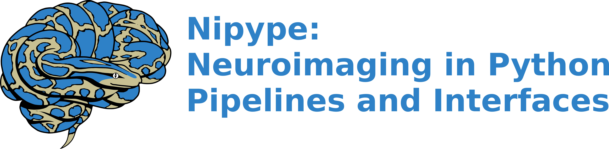
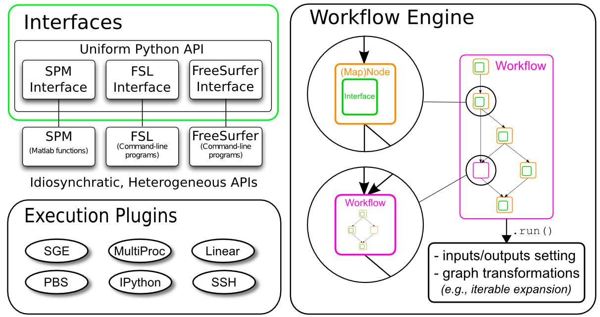

name: inverse layout: true class: center, middle, inverse --- # Introduction to # Nipype, Arcana & Banana --- name: content class: left layout: false name: intro ## A little background - [Nipype: NeuroImaging in Python Pipelines and Interfaces](https://www.frontiersin.org/articles/10.3389/fninf.2011.00013/full) ([Github](https://github.com/nipy/nipype)) - Developed at Stanford, MIT \+ others - [fMRI Prep](https://github.com/poldracklab/fmriprep) is implemented using it - [Arcana: Abstraction of Repository-Centric ANAlysis](https://dx.doi.org/10.1007/s12021-019-09430-1) ([Github](https://github.com/MonashBI/arcana)) - Developed at Monash Biomedical Imaging (MBI) - Builds upon Nipype - Object-oriented, "data-centric" workflows - [Banana: Brain ImAgiNg Analysis in Arcana](https://github.com/MonashBI/arcana) - Implemented in Arcana framework - Under-development by ... you?? - Collaborative development facilitated by Arcana framework ---  ## What is [Nipype](http://nipype.readthedocs.io/en/latest/)? - Provides unified way of **interfacing** with heterogeneous neuroimaging software like [SPM](http://www.fil.ion.ucl.ac.uk/spm/), [FSL](http://fsl.fmrib.ox.ac.uk/fsl/fslwiki/), [FreeSurfer](http://surfer.nmr.mgh.harvard.edu/), [AFNI](https://afni.nimh.nih.gov/afni), [ANTS](http://stnava.github.io/ANTs/), [Camino](http://web4.cs.ucl.ac.uk/research/medic/camino/pmwiki/pmwiki.php), [MRtrix](http://www.brain.org.au/software/mrtrix/index.html), [MNE](https://martinos.org/mne/stable/index.html), [Slicer](https://www.slicer.org/) and many more. - Allows users to create **complex workflows** consisting of multiple processing steps using any software package above - Efficient and optimized computation through **parallel execution** plugins --- ## SPM in Nipype Scripting analyses using the *SPM12* Matlab toolbox with Nipype is much cleaner than with `matlabbatch` (IMO): ```python from nipype.interfaces.spm import Smooth smooth = Smooth() smooth.inputs.in_files = 'functional.nii' smooth.inputs.fwhm = 6 smooth.run() ``` --- ## FSL in Nipype Scripting analysis using *FSL*, a collection of command line tools written in C/C++, can be written using the same syntax: ```python from nipype.interfaces.fsl import MCFLIRT mcflt = MCFLIRT() mcflt.inputs.in_file = 'functional.nii' mcflt.run() ``` Noting that you can still see what's happening under the hood with an additional line: ```python In [1]: mcflt.cmdline Out[1]: 'mcflirt -in functional.nii -out functional_mcf.nii' ``` -- <div class="bottom-note">Don't need to remember the idiosyncrasies of each FSL command! 😁</div> <!-- --> --- ## FreeSurfer in Nipype Likewise with Freesurfer, if you want to do smoothing on the surface... - with **two different smoothing kernels** values - on **both hemispheres** - on **six subjects** - all in **parallel**? -- With Nipype this would look like ```python from nipype.interfaces.freesurfer import SurfaceSmooth smoother = SurfaceSmooth() smoother.inputs.in_file = "{hemi}.func.mgz" smoother.iterables = [("hemi", ['lh', 'rh']), ("fwhm", [4, 8]), ("subject_id", ['sub01', 'sub02', 'sub03', 'sub04', 'sub05', 'sub06']), ] smoother.run(mode='parallel') ``` --- ## Best Bits from Each Toolbox - Instead of being stuck in MATLAB with SPM, or having scripting issues with FreeSurfer, ANTs or FSL,.. - **Nipype** gives you the possibility to select the algorithms that you prefer from many different software packages. - In short, you can have all the advantages without the disadvantage of being stuck with a programming language or software package --- ## A Short Example Let's assume we want to do preprocessing that uses **SPM** for *motion correction*, **FreeSurfer** for *coregistration*, **ANTS** for *normalization* and **FSL** for *smoothing*. Normally this would be a hell of a mess. It would mean switching between multiple scripts in different programming languages with a lot of manual intervention. **Nipype comes to the rescue!** <img src="../static/images/nipype_example_graph.png" width="550"> --- # Code Example The code to create a Nipype workflow like the example before would look something like this: ```python # Import modules from nipype.interfaces.freesurfer import BBRegister from nipype.interfaces.ants import WarpTimeSeriesImageMultiTransform from nipype.interfaces.fsl import SUSAN from nipype.interfaces.spm import Realign ``` ```python # Motion Correction (SPM) realign = Realign(register_to_mean=True) ``` ```python # Coregistration (FreeSurfer) coreg = BBRegister() ``` ```python # Normalization (ANTS) normalize = WarpTimeSeriesImageMultiTransform() ``` ```python # Smoothing (FSL) smooth = SUSAN(fwhm=6.0) ``` --- ```python # Where can the raw data be found? grabber = nipype.DataGrabber() grabber.inputs.base_directory = '~/experiment_folder/data' grabber.inputs.subject_id = ['subject1', 'subject2', 'subject3'] ``` ```python # Where should the output data be stored at? sink = nipype.DataSink() sink.inputs.base_directory = '~/experiment_folder/output_folder' ``` -- ```python # Create a workflow to connect all those nodes preprocflow = nipype.Workflow() ``` ```python # Connect the nodes to each other preprocflow.connect([(grabber -> realign ), (realign -> coreg ), (coreg -> normalize), (normalize -> smooth ), (smooth -> sink ) ]) ``` ```python # Run the workflow in parallel preprocflow.run(mode='parallel') ``` **Important**: This code is a shortened and simplified version of the real Nipype code. But it gives you a good idea of how intuitive it is to use Nipype for your neuroimaging analysis. --- ## So again, what is Nipype? Nipype consists of many parts, but the main ones are [Interfaces](basic_interfaces.ipynb), the [Workflow Engine](basic_workflow.ipynb) and the [Execution Plugins](basic_plugins.ipynb):  * **Interface**: Wraps a program or function * **Node/MapNode**: Wraps an `Interface` for use in a Workflow * **Workflow**: A *graph* or *forest of graphs* whose edges represent data flow * **Plugin**: A component that describes how a `Workflow` should be executed --- ## What is Arcana? Pronounced *Ah-kay-na*, as in "arcane" <div class="bottom-note">Aim: Capture the obscure domain knowledge (arcana) involved in neuroimaging analysis workflows</div> <br> -- - Unify code-base for collaborative development by: - Facilitating th design highly portable and customisable workflows --- ## Arcana: Portability - Arcana abstracts away all the "boring bits" that are dependent on - Data storage systems - Computational infrastructures - Software environments - Designer gets to focus on core-logic of the analysis --- ## Arcana: Customisation - Meta-parameters - Only expose interface parameters that are relevant to research question - Hide interface parameters that are dependent on other nodes - Class inheritance - Workflows are implemented as classes in Arcana - Override sections of the workflows in base classes that need to be specialised for your analysis --- ## What is Banana? - Implementation of all analysis done at Monash Biomedical Imaging - Looking for contributions from other centres! - Base classes specialised per image contrast - Contain standard analysis methods relevant for the datatype, e.g. FLAIR -> white matter hyper-intensities, dMRI -> tractography - Command-line interface for users to run complete analysis, e.g. ```bash $ banana derive data/ds000114 DwiAnalysis my_analysis connectome --parameter num_global_tracks 1e8 --processor slurm ```